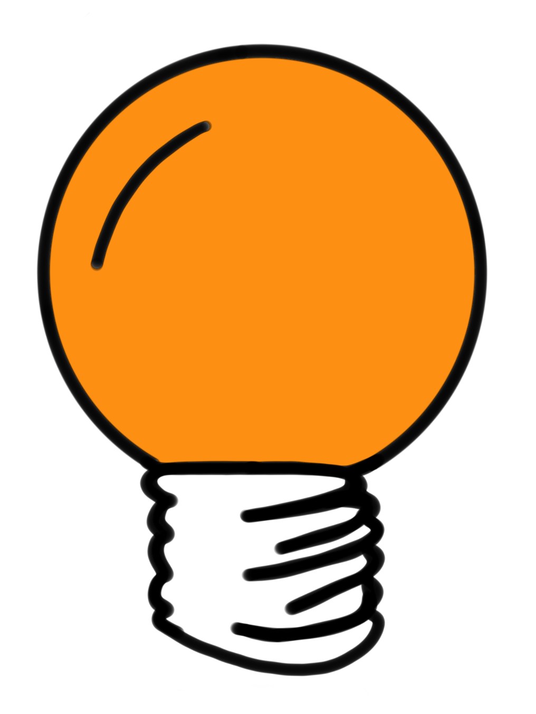
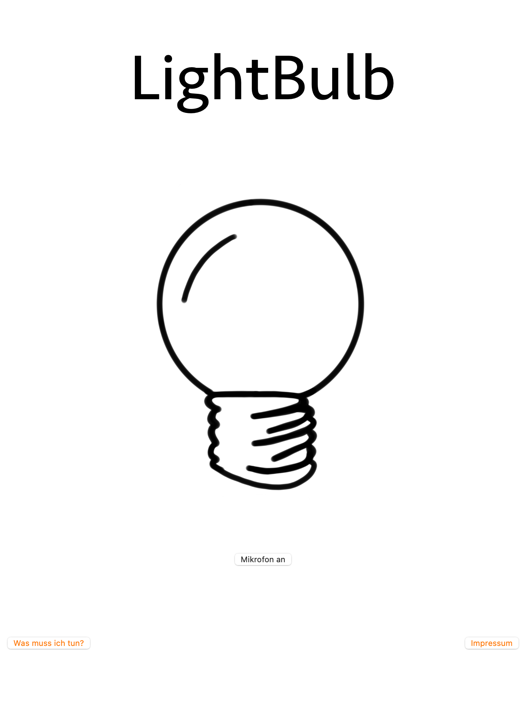
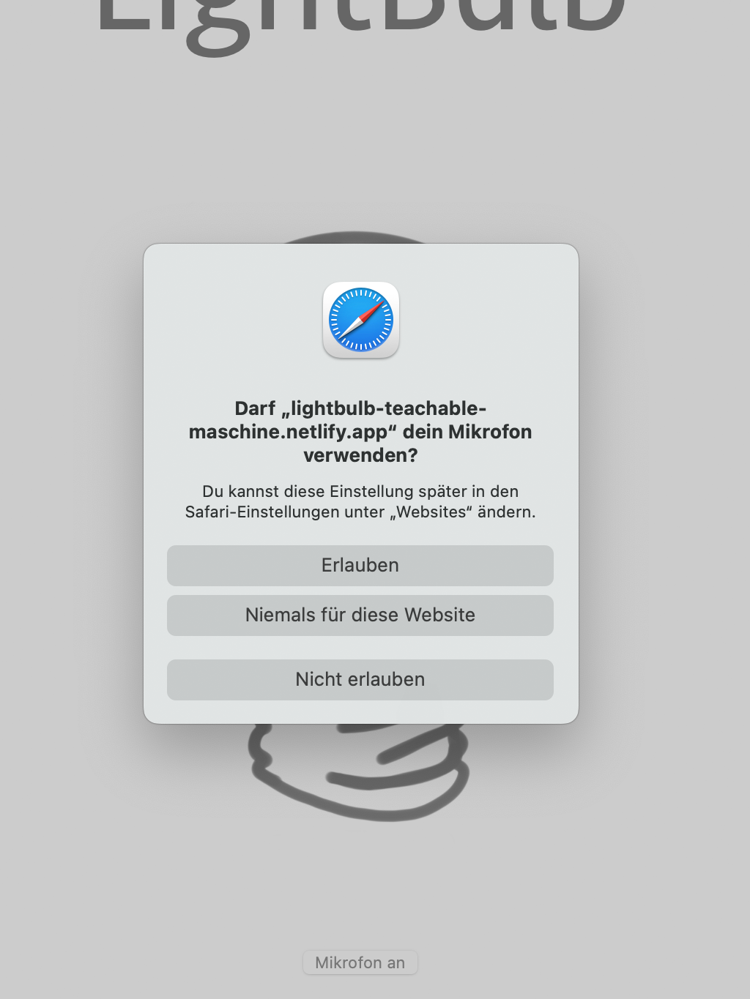
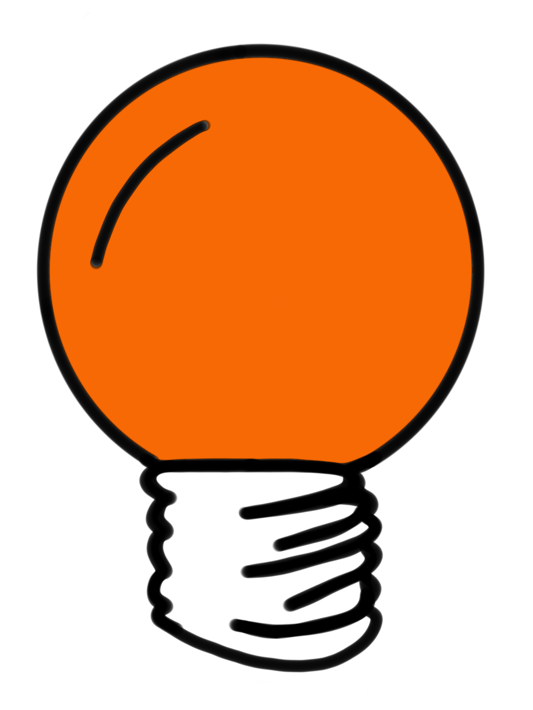
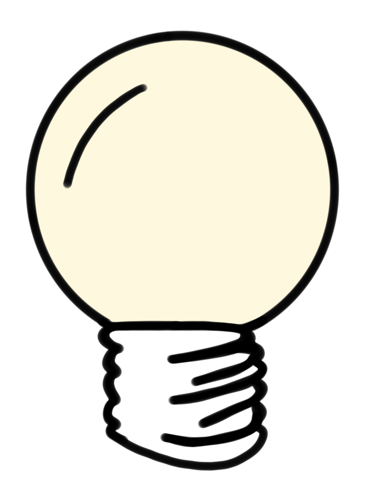

Für dieses Projekt wurde die Teachable Machine von Google verwendet. Dies ist ein webbasiertes Tool, mit dem Modelle für maschinelles Lernen erstellt werden können. Die Teachable Machine kann mit Bildern, Posen oder wie hier in dem Beispiel, mit Tönen trainiert werden. Der Benutzer sammelt zuerst die passenden Daten und trainiert daraufhin mit diesen Daten das Modell, sodass dieses Muster erkennen und unterschiedliche Daten auseinanderhalten kann. Die Daten werden dabei in unterschiedliche Kategorien, in sogenannte Klassen aufgeteilt, sodass die Teachable Machine bestimmte Daten einer Klasse zuordnen kann. Bei Audiodateien ist es wichtig zudem die Hintergrundgeräusche mit aufzunehmen, da diese sonst die anderen Dateien beeinträchtigen und das Training der Maschine beeinflussen können. Nach dem Training kann das Modell exportiert und in eigenen Projekten verwendet werden, wie zum Beispiel in der Website dieses LightBulb-Projektes.
Bei dem Lightbulb-Projekt wurden die verschiedenen Töne von c bis h als Datensatz aufgenommen. Jeder Ton bekam eine eigene Klasse, damit die Teachable Machine die unterschiedlichen Töne unterscheiden kann. Unter den Audiodateien waren Aufnahmen der Töne am Klavier und in unterschiedlicher Weise gesungen dabei. Die Idee hinter dem LightBulb-Projekt besteht darin, dass der Besucher der Website eine Glühbirne durch singen zum Leuchten bringen soll. Je höher der Ton dabei ist, desto heller scheint die Glühbirne.

Abbildung1

Abbildung2
Wenn die Seite aufgerufen wird, erscheint eine Startseite (Abb.1). Zu sehen ist eine nicht leuchtende Glühbirne, ein Button, um das Mikrofon anzuschalten und zwei weitere Buttons, um zum Einen zum Impressum zu gelangen und zum Anderen, um zu erfahren was genau man tun muss.
Der Button zum Anschalten des Mikrofons ist wichtig, da der Besucher der Website zuerst bestätigen muss, dass die Seite Zugriff auf das Mikrofon des Geräts haben darf (Abb.2). Im Code wird durch das Erlauben das trainierte Modell der Teachable Machine gestartet. Jedes Geräusch, was wahrgenommen wird, wird nun einer Klasse, also einem Ton oder dem Hintergrundgeräusch zugeordnet.
Zudem ist nun auch jeder Klasse, bzw. jedem Ton eine anders farbige Glühbirne zugeordnet, welche dann bei dem jeweils erkannten Ton, den der Betrachter singt oder spielt, aufgerufen wird:
aus

cdefga

h
Klickt man den Button Was muss ich tun? Erscheint ein Satz, der erläutert was die Aufgabe ist (Abb. 3).
Unter dem Button Impressum sind die grundlegenden Daten zu finden: Was ist das für ein Projekt? Von wem ist das Projekt? Wo, in welchem Kontext ist es entstanden? Etc. (Abb.4)